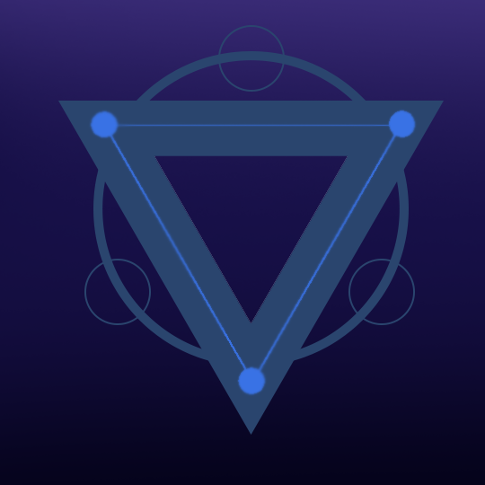

Астральный Легион

Флаг Астрального Легиона
Характеристики
На данный момент у Астрального Легиона насчитывается около - 5 захваченных солнечных систем.
Главным кораблём Астрального Легиона является корабль "Альтаир-2" названный в честь капитана - Альтаир.
Виды кораблей:
Название
Класс
Кол. человек
Альтаир-2
B
7.000 чел.
Сириус
B
500 чел.
Бетельгейзе
A
10.000.000 чел.
Кастор
?
чел.
Вега
?
чел.
Канопус
?
чел.
Особенности кораблей и фракции
- Особенности корабля Альтаир-2:
- - Оружие [Холопсикон] - Самое мощное оружие среди всего арсенала Астрального Легиона. Орудия основанное на микро-чёрной дыре и анти-материи. Оно способно выпустить луч, игнорирующие щиты/барьеры, который создаёт в точке попадания чёрную дыру которая всё время расширяется, пока не достигнет размера в 1-ну юпитерскую единицу. Но для выстрела потребуется довольно много энергии, по этому дабы оружие произвела выстрел её нужна зарядке в течении минуты. а так же, это оружие способно стрелять лишь в одно место в одном направлении, по этому против быстрых и мелких целей оно бесполезно.
- Особенности корабля Кастор:
- - Основной особенность этого корабля является то, что корабль имеет кольцообразную форму. Сам же корабль является гиганстким порталом для других кораблей. Как это работает - Один корабль связывается с другим, в любой точке вселенной, создавая между собой коридор в межпространстве. Тем дальше один корабль от другого, тем больше энергии будет потреблять портал и тем больше времени нужно для прибытия в другую точку. У корабля имеются солнечные и вакуумные батареи.
- Общая особенность:
-
- [Квантовое смещение] - Аура которая образуется вокруг всего корабля, с помощью которой все атаки по кораблю будут проходить сквозь его, не нанося ему вред и верд тому что в него попало.
В кратце - Корабль превращается в призрак который нельзя навредить физически.
Оно употребляет слишком много энергии, по этому держится не долго, около 15-20 минут (в зависимости от количества энергии, время продолжительности будет больше или меньше).
- - [Вакуумная батарея] - Это технология основана на анти-материи и использовании вакуума в космосе. Оно способно преобразовывать вакуум вокруг себя в чистую энергию используя для этого малые частицы анти-материи. По мощности она в 5 раз сильней чем солнечные батареии, но ещё не дотягивают до полномоштабных генераторов энергии.
История
В данный момент, история умалчивает . . . (Тут доджна быть История Астрального легиона, но пока её нет)